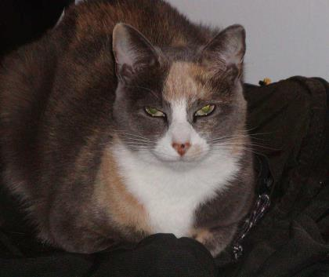

| Home | Kitties | About | Contact |
|---|
|  |
Medium |
Itty Bitty Kitty, Inc. is a non-kill, non-profit 501(c)(3) cat rescue organization. As of December 21st, 2015 Itty Bitty Kitty has a shelter but it is open to the public by appointment only. We are very excited to have a shelter in order to save more cats and kittens from being euthanized. Our shelter is located in Lower Macungie Township. We are limited on the number of cats we are allowed to have at the shelter due to the zoning in the township but we are still glad we have this location.
We are dedicated to saving the lives of homeless, stray and unwanted cats or kittens. We are a small, dedicated group of volunteers looking to put an end to the stray cat population. We provide safe and secure foster homes for abused, homeless and sometimes unwanted cats and kittens until they find their forever home. We find that Purrfect Match everytime.
In addition to helping find homes for the stray cats and kittens, we also help our community by educating the public about the importance of spaying and neutering. We not only educate the community, but help many individuals by assisting with the spaying or neutering of feral cat colonies throughout the Lehigh Valley. Our goal is to eliminate the feral cat colonies through the region by offering low cost spay-neuter clinics.
Our philosophy is being kind to animals helps build a better world for everyone. Through the generous support and donations from individuals within the community, we can ensure that any cat or kitten that comes into our care will receive the best of care and never have to worry about being alone, hungry, sick or in danger again.
Thank you once again for your support. Our cats and kittens also thank you.
Itty Bitty Kitty, Inc.
878 Minesite Rd.
Allentown, PA 18103
Open Saturdays from 11-2 except on a Holiday and by appointment.